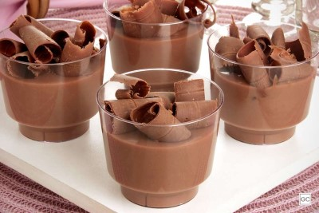

Já pensou em usar nossos chocolates em suas receitas?
Aqui damos algumas dicas para você testar e se deliciar!
Mousse no Copinho
Ingredientes
- 300g de chocolate Cacau Soul meio amargo picado
- 100g de chocolate ao leite Cacau Soul picado
- Raspas de chocolate ao leite Cacau Soul para decorar
- 1 lata de creme de leite
- 2 claras
- 1 pitada de sal
Modo de Preparo
Derreta os chocolates meio amargo e ao leite em banho-maria. Junte o creme de leite e misture. Na batedeira, bata as claras com uma pitada de sal até ficar em ponto de neve. Misture delicadamente ao chocolate derretido e divida entre copinhos individuais pequenos. Leve à geladeira por 2 horas. Retire, decore com as raspas de chocolate e sirva em seguida.
Brigadeiro Gourmet

Ingredientes
- 100g de chocolate Cacau Soul meio amargo ralado
- 1 lata de leite condensado
- 1 lata de creme de leite
- 1 colher (sopa) de margarina
- 1 pacote de granulado/confeito
Modo de Preparo
Em uma panela com fogo desligado, adicione o leite condensado, o creme de leite, a margarina, misturando bem. Em seguida, coloque a panela em fogo médio, adicione o chocolate ralado, e mexa por 10 minutos até que obtenha o ponto de brigadeiro (que é aquele que quando você inclinar a sua panela, o doce desgrudará do fundo, formando ondas). Tome cuidado para que seu brigadeiro não queime, mexa sem parar, pois estará em fogo médio. Com o fogo desligado, transfira o brigadeiro rapidamente para outro recipiente e cubra com papel filme para que seu doce fique protegido na geladeira. Deixe esfriar durante 20 a 30 minutos. Retire da geladeira, retire o papel filme, unte suas mãos com margarina e enrole seus brigadeiros gourmet do tamanho desejado. Em seguida, envolva-os nos granulados/confeitos. E está pronto seu brigadeiro gourmet, bom apetite!
Pipoca com Chocolate
Ingredientes
- 1 colher (sopa) de óleo
- 1/2 xícara (chá) de milho de pipoca
- 5 colheres (sopa) de açúcar
- 1/2 colher (sopa) de manteiga
- 70g de chocolate ao leite Cacau Soul
Modo de Preparo
Faça a pipoca normalmente com o óleo. Coloque o açúcar e a manteiga na panela em fogo médio e misture o tempo todo até ela ficar bem molinha, quase como água.Enquanto isso, derreta o chocolate no microondas ou em banho-maria. Junte o chocolate derretido à calda na panela e mistura bem rapidinho, até ficar homogêneo.Desligue o fogo e coloque a pipoca aos poucos para você conseguir misturar tudo e deixar todas elas cobertas com chocolate. Deixe esfriar um pouco e pode servir.